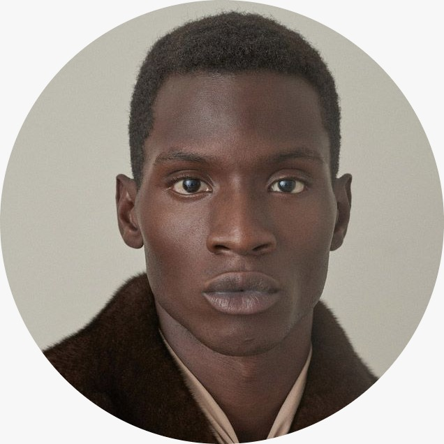

Sentado aqui nesse hospital, sem ter para onde fugir, ou bebidas para silenciar essas vozes da minha cabeça, me encontro com um monte de pensamentos contraditórios. E são nessas horas difíceis que percebo a falta que o meu Aleixo faz. Se pelo menos eu tivesse uma pessoa que eu pudesse botar os pensamentos pra fora. Acho que ando exagerando nas bebidas e nas brigas, mas não consigo me controlar mais, é muita coisa acontecendo em pouco tempo. Desde aquele dia que vi ele pela primeira vez, não consigo mais tirar aquele seu corpo pálido da minha mente. Arre, diabo! ódio e cachaça me consumiram esses dias, tinha uma vontade de cometer loucuras e acabei perdendo o juízo e Aleixo é a causa de tudo isso. Ah seu Aleixo, seu Aleixo. Causei uma confusão por ele e nem assim vem me visitar. E o pior de tudo isso é que as dores físicas que eu estou sentindo agora, depois de todo castigo, aprisionamento e tabefes que levei daquele calhorda biltre que parece que só nasceu pra fazer mal, não chegam nem perto da dor que é ser ignorado pela pessoa que mais deseja. Tantas coisas que poderíamos fazer juntos naquele pequeno cômodo que ficavamos e agora ele parece mais distante do que nunca, onde será que ele anda se metendo? será que encontrou outro para se envolver? só sei que sem ele a vida perde seu prazer. O que me consola é acreditar que um dia poderemos ser como éramos antes, felizes. E que apesar dos acontecimentos recentes tenho esperança de que nossos desejos um pelo outro são verdadeiros, e que por isso nunca vão acabar. Por mais que a gente passe por dificuldades, a gente sobrevive a cada uma. Ao escrever essas palavras também quero deixar registrado aqui que não desistirei tão fácil, posso passar por tudo de pior no mundo, mas lutarei até o fim, doa a quem doer.
Bom Crioulo
Amaro
Publicações